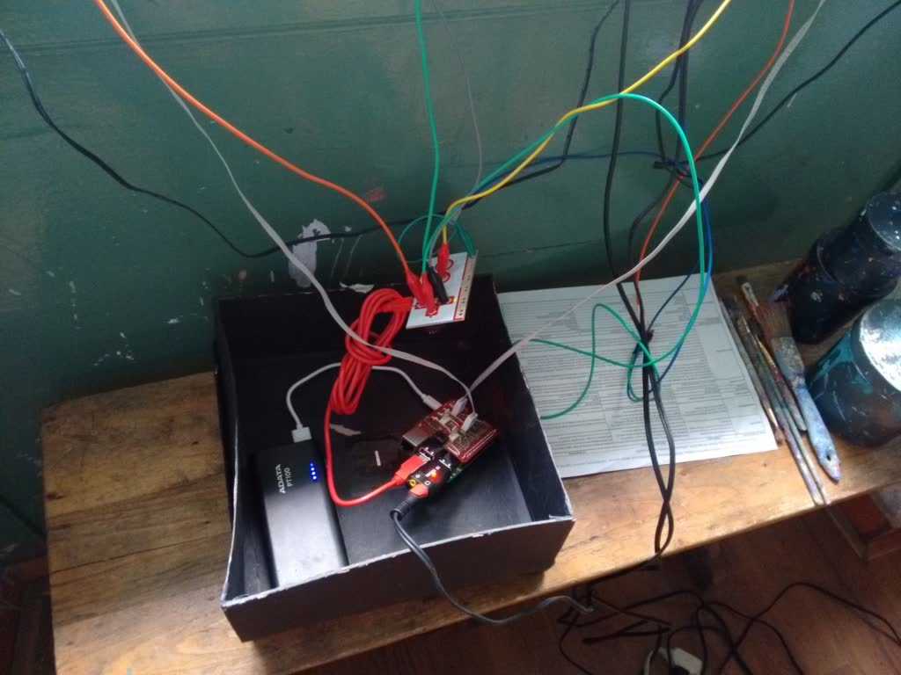
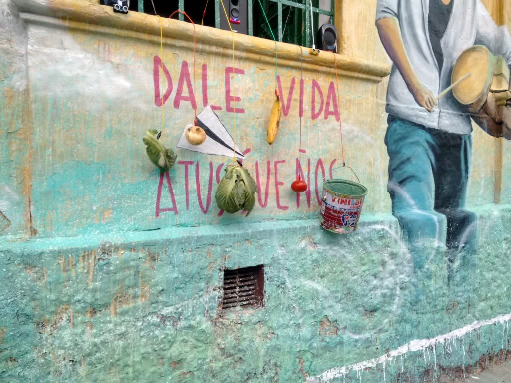
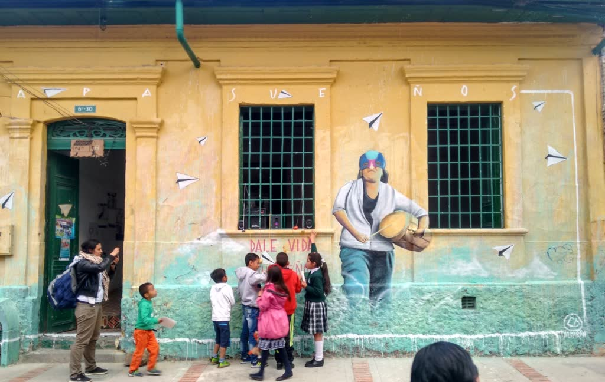

Semana de los sueños en Belén
- Fecha
- Agosto 2016
- Lugar
- Casa B, barrio Belén, Bogotá
- Rol
- Programador y performer
- Tecnologías
- Python, Raspberry Pi

Instalación sonora interactiva en Casa B durante la celebración de la Semana de los Sueños de Belén, Bogotá.

